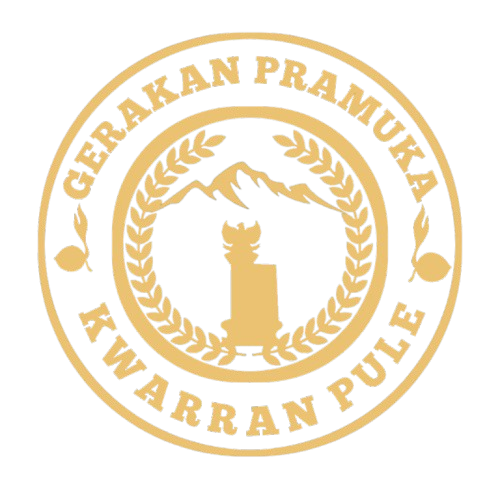

Kwartir Ranting Gerakan Pramuka Pule
Beranda
Profil
Galeri
Kontak
Galeri Kegiatan Pramuka
Kemah Pramuka
Pelantikan Siaga Garuda
Apel Akbar Hut Pramuka Ke 63
Rapat Kerja Ranting Tahun 2025
Sidparcab Trenggalek Tahun 2025
Rapat Kerja Cabang Trenggalek 2025
Saka Wirakartika Bagi Takjil
Pemberian Penghargaan Kepada Peserta LGP 3